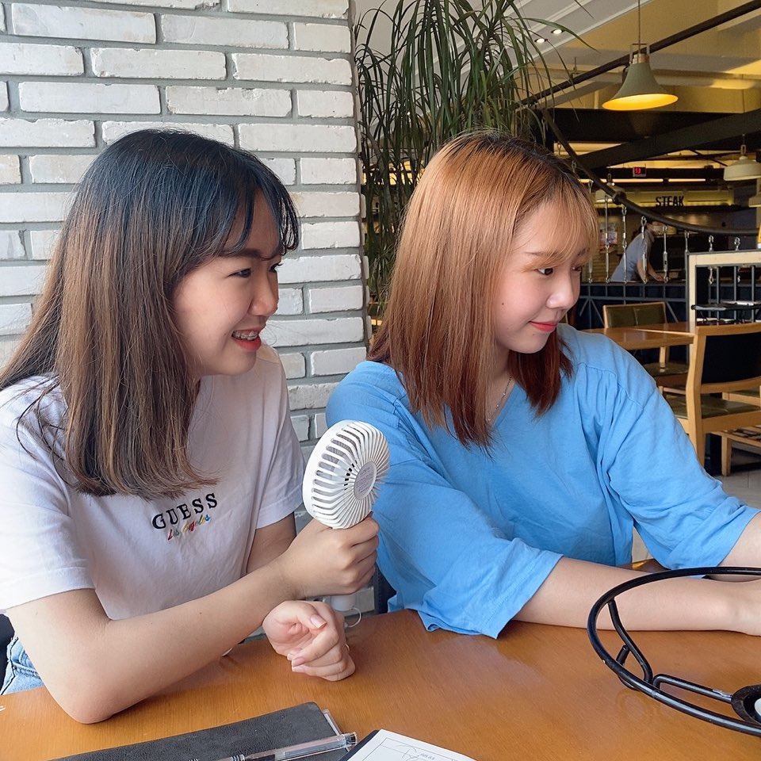

내가 아는 현진이
현진이를 안지 어언 6년째. 나는 아직도 그녀를 모른다.
내가 아는 현진이는 밝으면서도 어둡고 잘 웃다가도 금새 그치는 그런 친구다.
현재 엔시티를 좋아하고 있으며 그 감정이 생각보다 꽤 큰 것으로 알고 있다.
문화생활을 하며 같은 취향이라고 말하기엔 애매하지만 웃음코드만은 잘 맞는 편이다.
솔직한 것을 좋아하며 싫어하는 것은 확실히 싫어하는 편이다.
밖에서 나가 노는 것보다 집에서 노는 것을 선호한다.
작심삼일을 함께 행할 수 있는 좋은 친구이다.
답장을 하는 경우가 너무나도 극단적이다. (답장을 하거나/안하거나)